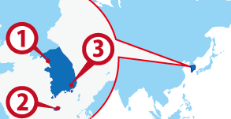

Seoul
Seoul Cheju
Cheju Pusan
Pusan
ワーホリ協定国一覧へ戻る

韓国人気都市 BEST3
韓国基本情報
| 首都 | Seoul |
|---|---|
| 言語 | 조선말 |
| 面積 | 100,033 km²(世界109位) |
| 人口 | 48,183,584人(世界25位) |
| 通貨 | Korean Won (KRW) |
＊2014 年10 月時点の数値です
| 日本時間 | Seoul |
|---|---|
 1月1日 09:00am |
日本と時差は ありません |
＊サマータイムの期間は時差が変動します
| 首都 | Seoul |
|---|---|
| 面積 | 100,033 km²(世界109位) |
| 人口 | 48,183,584人(世界25位) |
| 言語 | 조선말 |
|---|---|
| 通貨 | Korean Won (KRW) |
＊2014 年10 月時点の数値です |
|
日本との時差
| 日本時間 | Seoul |
|---|---|
|
1月1日 09:00am |
日本と時差は ありません |
＊サマータイムの期間は時差が変動します
韓国ってどんな国？
日本に一番近く飛行機代も安いので頻繁に帰国できる。 韓国語は日本語と同じ文法なので覚えやすく40個の文字記号の組み合わせですべての文字が書けるので規則を覚えれば習得しやすいが発音は日本語にない音も多く複雑。 最近の韓流ブームの影響で老若男女を問わず日本の観光客が押し寄せている。首都ソウルは全体面積の0.6 %でありながら、全人口の25%が集中する一極集中都市になっている。 時給は約800円で日本から行くワーキングホリデーは働くことを目的としない韓国ワーキングホリデーも多い。その反対に韓国から日本への韓国人のワーキングホリデーは7000人以上が渡日しており、働くことを目的として日本に来る韓国人ワーキングホリデーは非常に多い。
日本ではあまり知られていないが歴史も文化も知るとおもしろい。最近では日本をしのぐほどのＩＴ国家で、家電や携帯は韓国の方がおもしろかったりする。
衣料や食事は安いので生活費はあまりかからない。酒は勧められるままに飲むと危ないかも。。
▼▼▼まずは無料セミナーへ！ワーキングホリデー＆留学の無料セミナーはこちら！▼▼▼